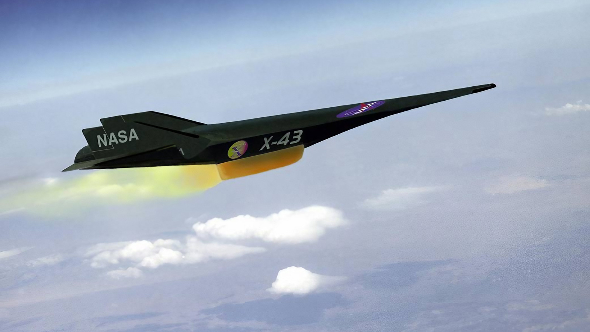

SCRAMJET
Propulsão para voo hipersônico atmosférico.

O Scramjet (Supersonic Combustion Ramjet) é um sistema de propulsão que utiliza o oxigênio presente na atmosfera para realizar a combustão do combustível, mantendo o fluxo de ar em velocidades supersônicas dentro do motor. Diferentemente dos motores convencionais, ele não depende de compressores ou turbinas, aproveitando a própria velocidade do veículo para comprimir o ar. Essa arquitetura permite explorar regimes de voo hipersônico que estão além das capacidades da maioria dos sistemas de propulsão atmosférica.
A propulsão Scramjet representa uma das possibilidades mais promissoras para expandir os limites do voo hipersônico. Ao utilizar o oxigênio atmosférico, o sistema elimina a necessidade de transportar oxidante durante essa etapa do voo, oferecendo vantagens potenciais em massa e eficiência. Seu desenvolvimento pode contribuir para novas gerações de veículos de alta velocidade, plataformas de pesquisa atmosférica e sistemas avançados de acesso ao espaço.
Durante o voo, o ar entra no motor em alta velocidade e é comprimido por meio da geometria da entrada e da formação de ondas de choque. O combustível é então injetado e misturado ao fluxo supersônico, produzindo uma combustão extremamente rápida. Os gases resultantes são acelerados e expandidos pelo bocal de saída, gerando empuxo. Como o motor depende de uma velocidade inicial elevada, sua operação exige que o veículo seja acelerado previamente por outro sistema de propulsão.
O desenvolvimento de um Scramjet exige soluções para alguns dos problemas mais complexos da engenharia aeroespacial. A combustão precisa ocorrer em frações de segundo, enquanto o motor é submetido a temperaturas extremamente elevadas e intensas cargas aerodinâmicas. Manter a estabilidade do fluxo, controlar o aquecimento estrutural e garantir a eficiência da mistura entre ar e combustível são desafios fundamentais para tornar essa tecnologia viável em aplicações práticas.